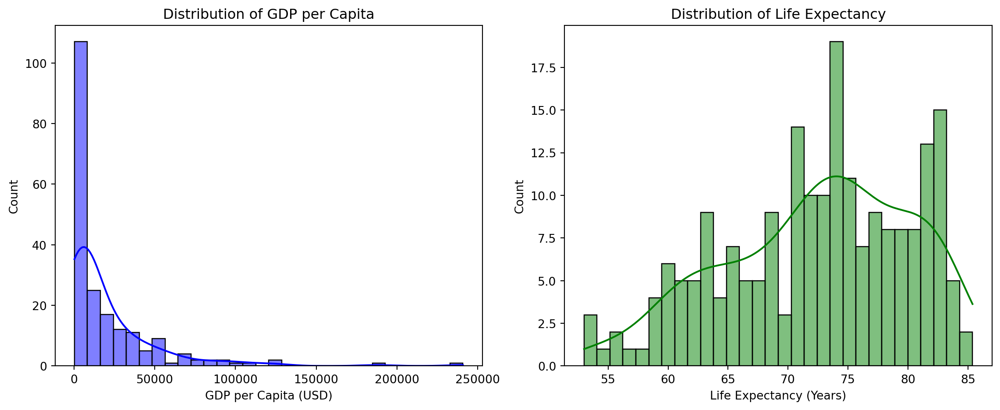
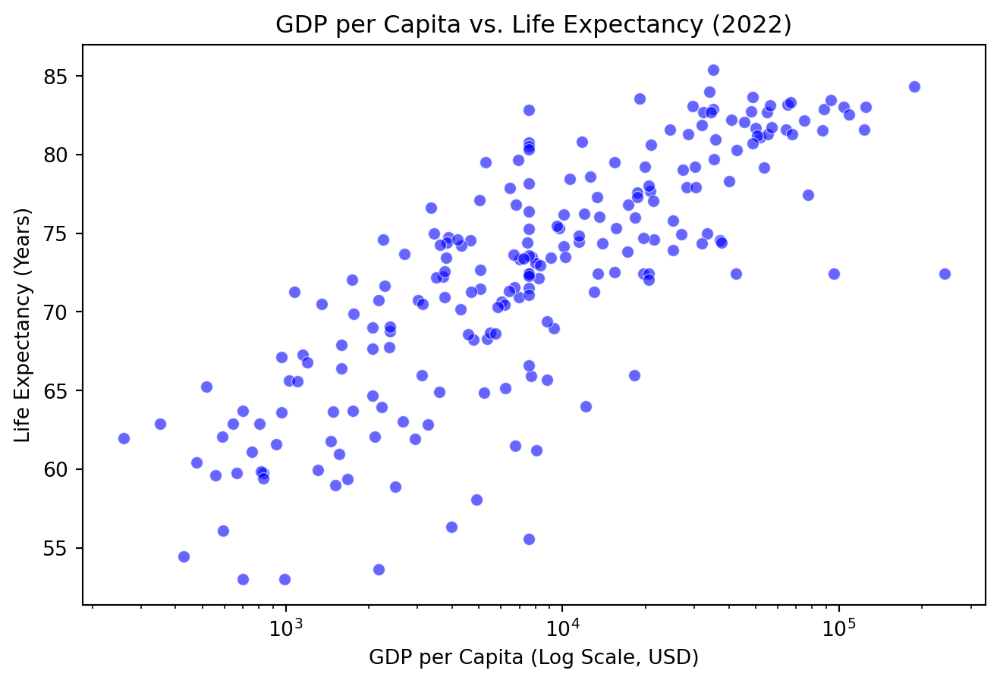

In this report, we analyze a sample of the World Development Indicators dataset published by the World Bank(Bank 2022), focusing on one year (2022).
Our analysis centers on four key variables: country, GDP per capita, life expectancy, and total population. We begin by conducting a data quality assessment, identifying missing values and handling them appropriately. To determine the best imputation method, we examine the distribution of GDP per Capita and Life Expectancy using histogram plots (see Figure Figure 1). Based on the distributions, we apply median imputation for GDP per Capita (due to skewness) and mean imputation for Life Expectancy (assuming a normal distribution).
After data cleaning, we proceed with exploratory data analysis (EDA) using visualizations:1) A Bar Chart displaying the Top 10 countries by GDP per Capita to identify the wealthiest nations (see Figure Figure 2);2) A Scatter Plot exploring the relationship between GDP per Capita and Life Expectancy, assessing economic prosperity’s impact on public health (see Figure Figure 3). This relationship has been extensively studied, with findings suggesting that higher GDP per capita is often associated with increased life expectancy (Crespo Cuaresma, Lutz, and Sanderson 2019).
Table Table 1 provides key summary statistics for GDP per Capita, Life Expectancy, and Total Population across 217 countries. Specifically, we found that the mean GDP per capita is $20,345.71, with a high standard deviation of $31,308.94, indicating substantial economic disparities among nations. While some countries report extremely low GDP per capita values, others exhibit significantly higher figures, contributing to the observed variation. Secondly, life expectancy averages 72.42 years, ranging from 53 to 85.38 years, reflecting disparities in healthcare access and overall living conditions. This wide range underscores persistent global health inequalities. Also, the mean total population is 36.5 million, but the distribution is highly skewed due to populous nations such as China (1.4 billion) and smaller island states with significantly lower populations.
Load the Dataset & Quality Check
import pandas as pd# Load the datasetdf = pd.read_csv("data/wdi.csv")# Display the first few rowsdisplay(df.head())# Check for dataset info print(df.info())
After reviewing the dataset, we decided to choose four indicators for further exploratory data analysis: country, gdp_per_capita, life_expectancy, and total_population. This section provides an overview of these indicators and their distributions.
Firstly, we check for missing values and duplicate rows.
Findings: - No duplicated rows. - Missing values in GDP per Capita (6.45%) and Life Expectancy (3.69%).
# Check for missing values and calculate percentagemissing_values = df_selected.isnull().sum()missing_percentage = (missing_values /len(df_selected)) *100# Check for duplicated rowsduplicate_count = df_selected.duplicated().sum()# Create a summary tablemissing_summary = pd.DataFrame({"Missing Values": missing_values,"Missing Percentage (%)": missing_percentage})# Display resultsprint("Missing Values Summary")display(missing_summary)print(f"\nNumber of Duplicate Rows: {duplicate_count}")
Missing Values Summary
Missing Values
Missing Percentage (%)
country
0
0.000000
gdp_per_capita
14
6.451613
life_expectancy
8
3.686636
total_population
0
0.000000
Number of Duplicate Rows: 0
Distribution Analysis Before Cleaning
To decide how to handle missing values, we first look at the distributions of GDP per Capita and Life Expectancy using histograms.
Our analysis shows:1)GDP per Capita is highly skewed, meaning there are extreme values that could distort the average. Because of this, we use median imputation, which is less affected by outliers; 2)Life Expectancy follows a roughly normal distribution, so mean imputation is the best choice since the mean is a good representation of the data in this case.

Figure 1: Distribution of GDP per Capita and Life Expectancy Before Cleaning. Data Source: World Bank (Bank 2022).
Handling Missing Values
Since missing values are present in GDP per Capita (6.45%) and Life Expectancy (3.69%), to avoid data loss, we impute missing values as follows:1)for GDP per Capita, we replaced with the median value;2) for Life Expectancy, we replaced with the mean value.
After handling missing values, we review the dataset and its key statistics.Table Table 1 is a summary of key statistics for the cleaned dataset:
Table 1: Summary Statistics for Key Indicators (2022). Data Source: World Bank (Bank 2022).
count
mean
std
min
25%
50%
75%
max
gdp_per_capita
217.00
19522.60
30439.85
259.03
3012.22
7587.59
21508.40
240862.18
life_expectancy
217.00
72.42
7.57
53.00
67.26
73.39
78.16
85.38
total_population
217.00
36536447.72
141058261.99
11312.00
808726.00
6465097.00
26069416.00
1417173173.00
Exploratory Visualizations
Now that we’ve handled missing values and examined distributions, let’s explore key relationships between indicators using different visualizations.
To better understand the key indicators, we use: 1. A Bar Chart (Top 10 countries by GDP per Capita). 2. A Scatter Plot (GDP per Capita vs. Life Expectancy).
Top 10 Countries by GDP per Capita
Figure 2: Top 10 Countries by GDP per Capita (2022). Data Source: World Bank (Bank 2022).
Relationship Between GDP per Capita and Life Expectancy

Figure 3: Relationship Between GDP per Capita and Life Expectancy. Data Source: World Bank (Bank 2022).
Conclusion
In this report, we analyzed the World Development Indicators dataset, focusing on GDP per capita, life expectancy, and total population. Our findings highlight the relationship between economic prosperity and public health, as well as the distribution of wealth across countries. The visualizations and statistical summaries provide a comprehensive overview of the data, enabling further insights into global development trends.
Crespo Cuaresma, Jesus, Wolfgang Lutz, and Warren Sanderson. 2019. “Is the Demographic Dividend an Education Dividend?”Genus 75 (1): 1–14. https://doi.org/10.1186/s41118-019-0071-0.